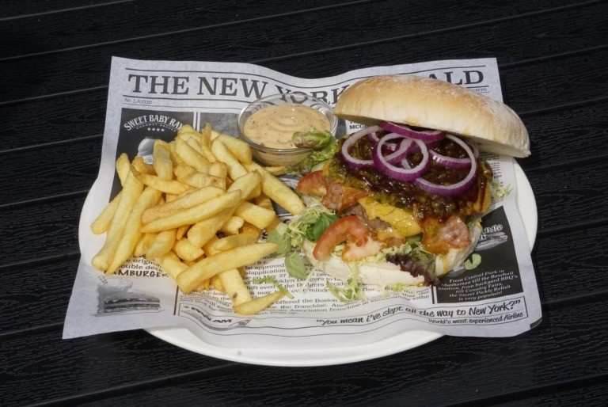
Black Angus Burger
Wereldberoemd in Leusden: 170 gram, 100% puur rundvlees. Los 12,50, als menu 16,50.
Dinsdag gesloten, alle andere dagen open vanaf 11:00
Al sinds 1977 de cafetaria van Leusden. Drie generaties familie Maarsseveen, met liefde bereid aan de Lepelaar 7.

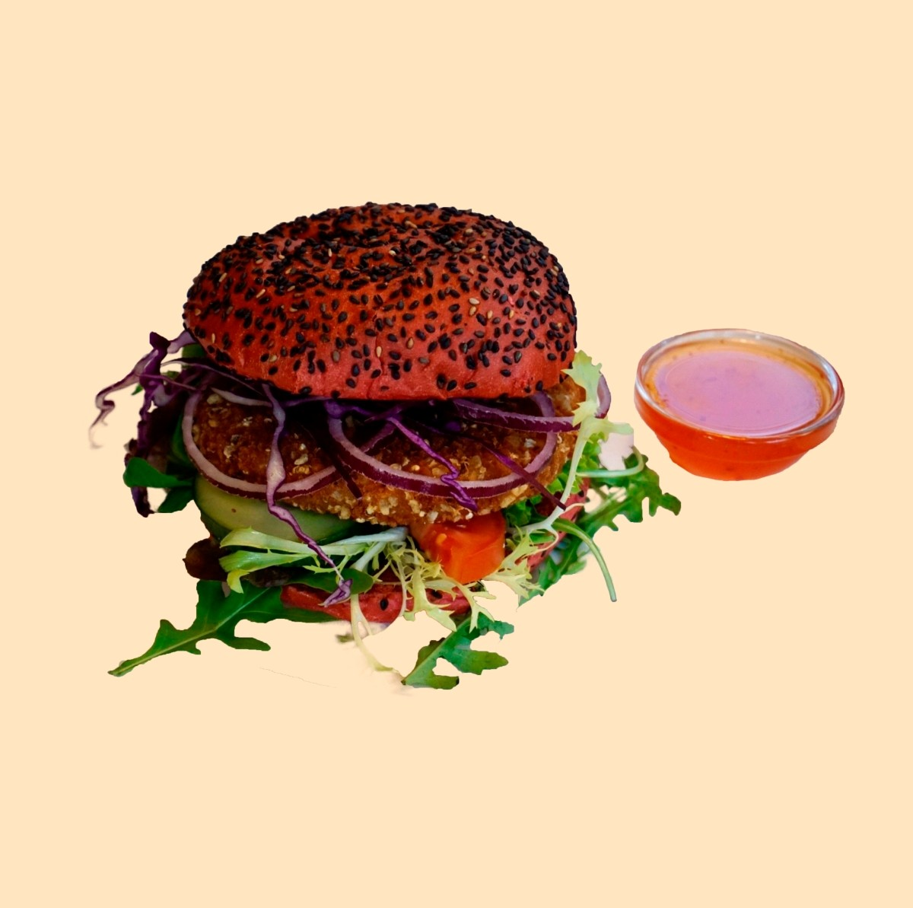
sinds1977

Wereldberoemd in Leusden: 170 gram, 100% puur rundvlees. Los 12,50, als menu 16,50.
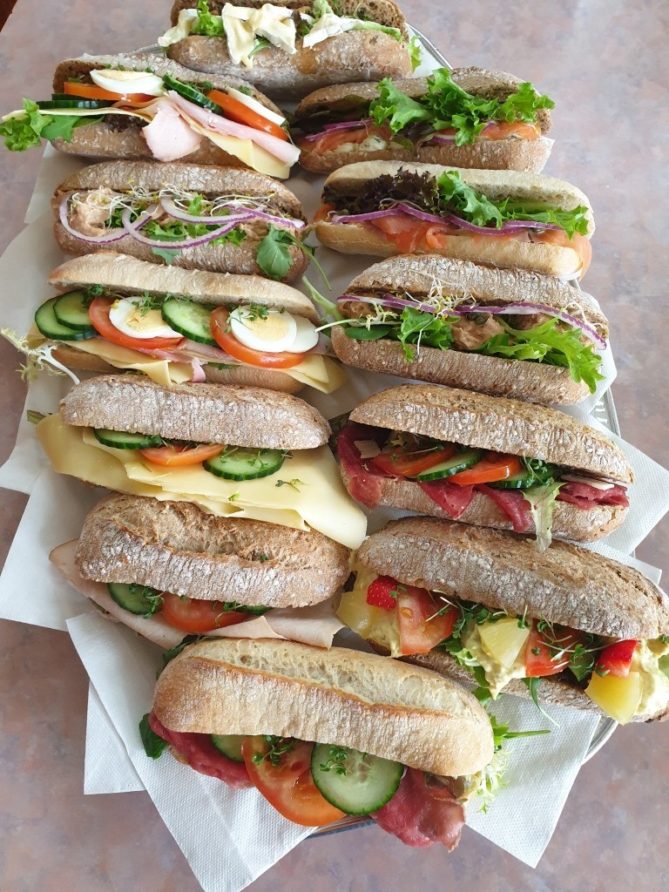
Ambachtelijk belegd, van een bolletje tot een rustiek broodje. Fricandeau, rosbief en slaatjes maken we zelf.
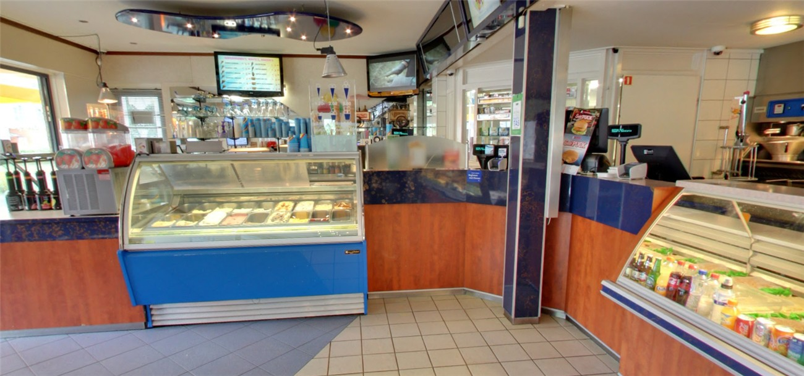
Dagelijks vers bereid, Italiaans ambacht. Kies uit veertig wisselende smaken in de vitrine.
Glutenvrije snacks bakken we in een aparte oven en pan, die we alleen daarvoor gebruiken.
Geldig van 19 november tot en met 2 december 2026
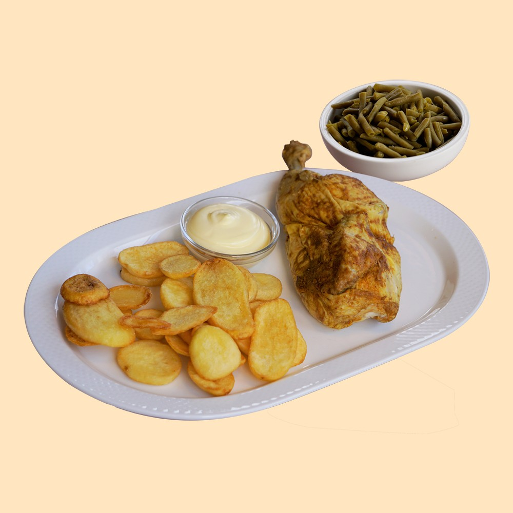
Keuze uit patat, raspatat en gebakken aardappelen, met diverse groenten.
13,95
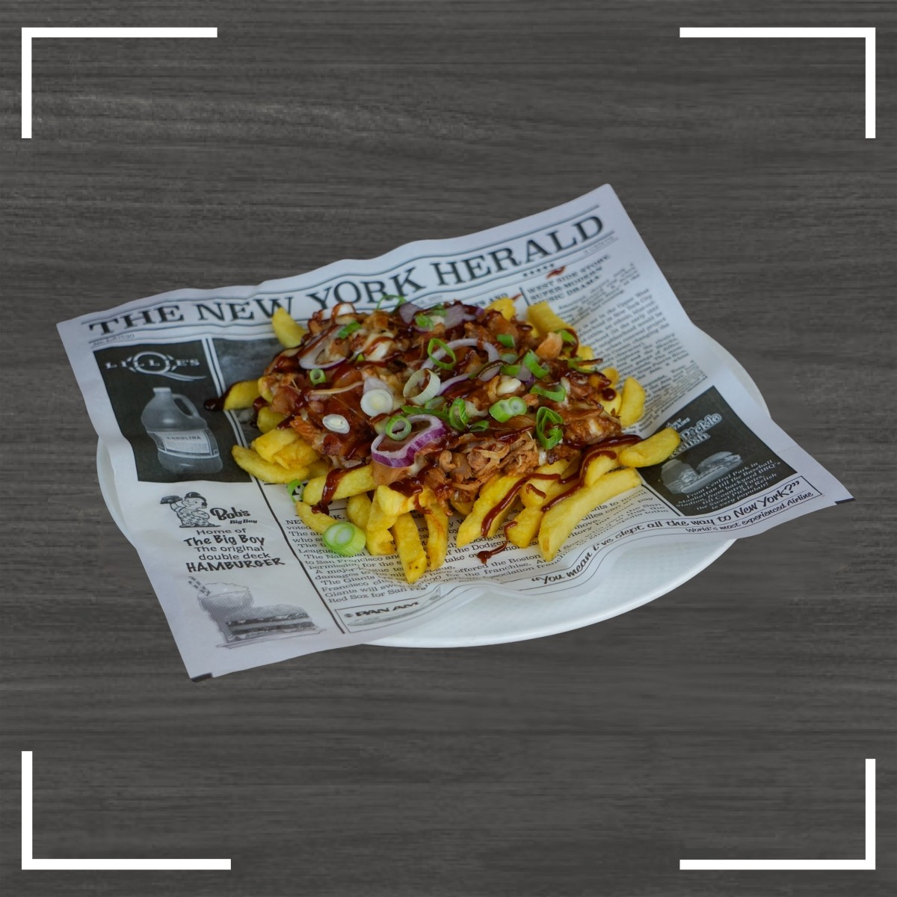
Pulled chicken, BBQ-saus, bacon, mozzarella, rode ui en bosui.
10,25
Bietenbrood, rucola, komkommer, tomaat, avocadoburger, rode ui en rode kool. Naar keuze met chilisaus.
7,10
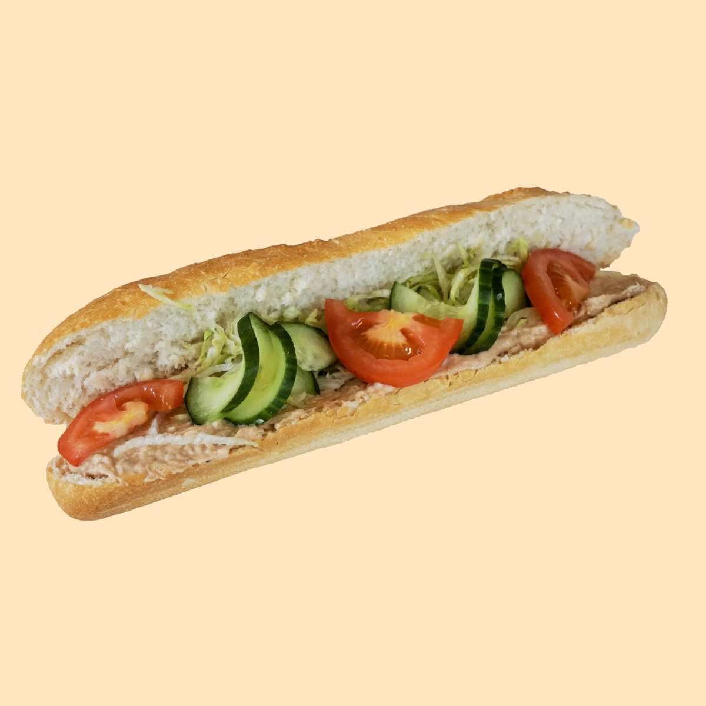
Rijk belegd met onze tonijnsalade.
5,50
3,50
2,60
Zaterdag 5 december, Sinterklaasavond: wij zijn gewoon open van 11:00 tot 22:00, bezorgen van 17:00 tot 20:30.
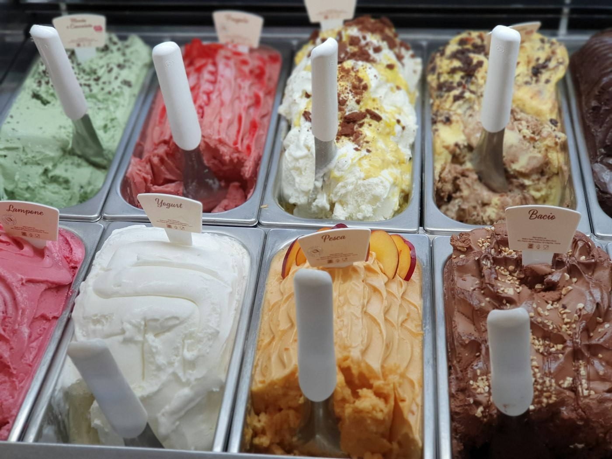
Sinds 1984 maken we ons eigen Italiaanse schepijs. Dagelijks vers, met verse melk rechtstreeks van een Leusdense boer.
Liever iets om te drinken? Milkshakes en yoghurtshakes vanaf 2,95, in de smaken aardbei, banaan, vanille, chocolade, citroen, mocca, kersen, pistache, kiwi en sinaasappel. Of een van onze ice coffees en smoothies.
Shakes en ice coffees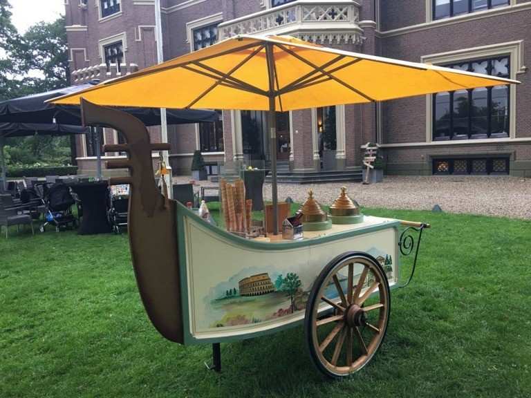
Geeft u een feestje? Wij verhuren onze Italiaanse ijskarren, gevuld met ons eigen schepijs. Vraag in onze ijssalon naar de mogelijkheden, of neem contact met ons op.
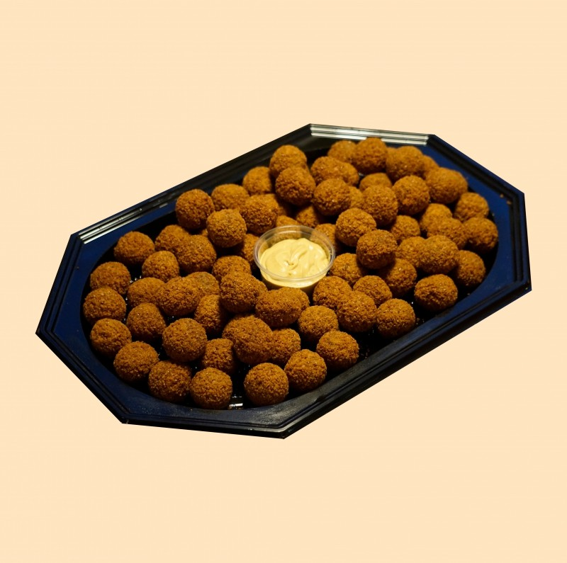
Inclusief bakje mayonaise en mosterd.
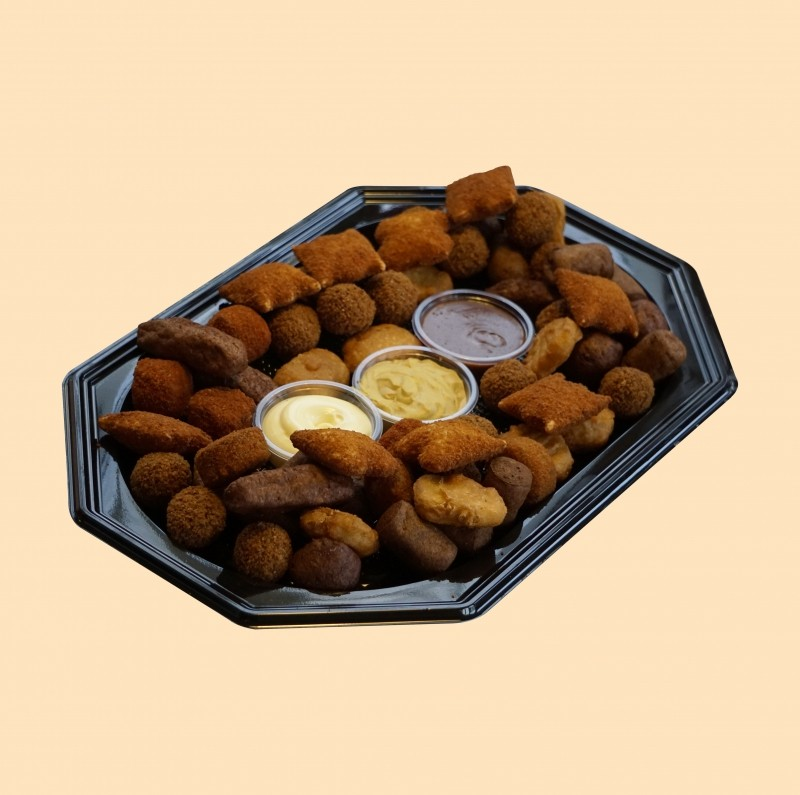
Mini bami, nasi, mexicano, gehaktbal, frikandel, soufflé, bitterballen en kipnuggets. Inclusief bakje satésaus, mayonaise en mosterd.
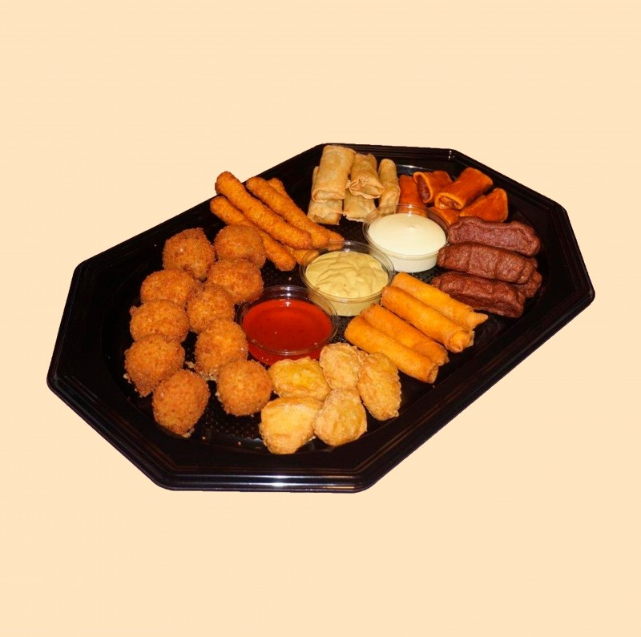
Mini mexicano's, vlammetjes, groenteloempia's, kipfingers, rundvlees bitterballen, kipnuggets en kaasstengels.
Bedrijven kunnen bij ons terecht voor de lunch en voor overwerkmaaltijden. Onze kipschnitzels, kipvleugels, halve kippen, kip- en varkenssaté, fricandeau, rosbief, slaatjes, shoarma, gyros en spareribs maken we allemaal zelf, net als onze sauzen.
Hutspot, boerenkool- en zuurkoolstamppot uit eigen keuken. Tomaten- of groentesoep in de pan kan vanaf 10 personen.
Bakjes mayonaise en satésaus (180 of 300 cc), joppiesaus (180 cc) en losse vlammetjes per stuk.
Van een snackwagen met gebakken vis in 1977 tot de ijssalon, cafetaria en cateringservice van nu. Zorgvuldig opgebouwd door drie generaties van de familie Maarsseveen.
1977
Sjaak Maarsseveen was vijfendertig en wilde iets voor zichzelf. Medio april 1977 startte hij aan de Torenakkerweg, naast de Biezenkamp. De naam? Jacco's, naar zijn oudste zoon Jacco en zijn vader Co. Moeder Bep bereidde thuis nasiballen, gehaktballen en halve kippen in de oven.
Daarna stond de wagen een jaar in een weiland aan de Smoussesteeg (nu Cohensteeg) en veertien maanden aan de Hamersveldseweg, waar nu de Rabobank staat.
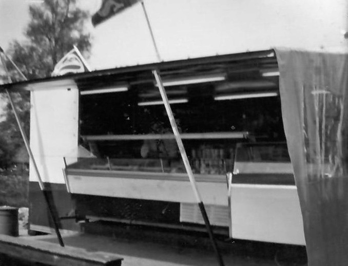
1979
Op 30 augustus 1979 opende burgemeester Rademaker de nieuwe houten cafetaria van zeven bij vijftien meter. Alles eromheen was nog weiland en in aanbouw; de beste klanten waren bouwvakkers. "In 1979 zat Leusden slechts 1 dag zonder patat."
Jacco's was 7 dagen per week open, uniek voor toen, met maaltijden van aardappels, vlees en groente. Vanaf 1981 reed de mobiele frietwagen naar evenementen, zoals fietscrosswedstrijden.
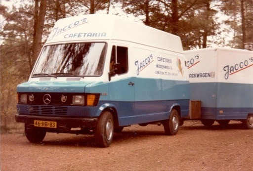
1984
Na een cursus ijs bereiden in 1982, ijsdiploma's en reisjes naar Italië was het in 1984 zover. Voor het nauwkeurige rekenwerk gebruikte Sjaak voor het eerst in zijn leven een calculator, geleend van Jacco. In 1986 opende de ijssalon op De Komenij 1, bij winkelcentrum Hamershof.
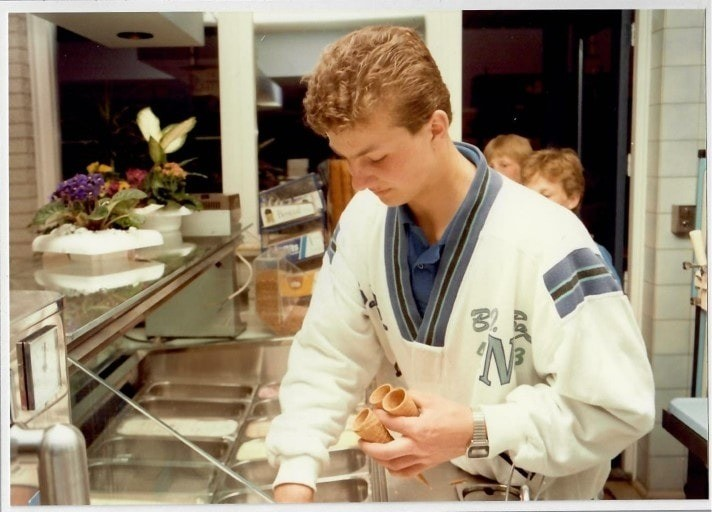
1985
Bij de aanleg van de A28 vonden de wegwerkers Jacco's snel. Al gauw bracht de familie het eten 's nachts naar de bouwers, vier nachten per week. Het record: 360 bezorgde maaltijden in één nacht, in 1995. "We kunnen wel stellen dat de aanleg van de A28 mede mogelijk is gemaakt door Jacco's!"
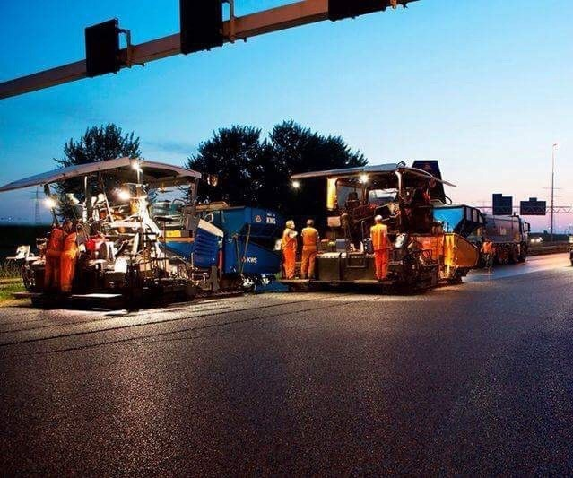
1987
Architect Chris Smit tekende het nieuwe gebouw. Er lag alleen een zandweg, dus bracht een shovel de hele bakwand naar binnen. Op 27 april 1987 opende burgemeester Rademaker het huidige pand, Lepelaar 7 (toen Middenweg 3).
Van 1988 tot 1995 had Jacco's ook ijssalon Palermo in Utrecht en leverde het ijs aan cafetaria's in Beest, Soest, De Bilt, Zeist en Westbroek.
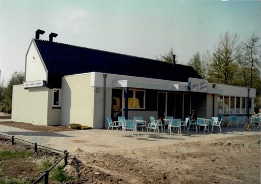
2000
De ijskeuken werd uitgebreid en er kwamen een nieuwe bakwand en een nieuw interieur. Later volgden een nieuwe vloer, buitenpui, ijsvitrine, digitale prijsborden en een aparte oven en pan voor glutenvrij.
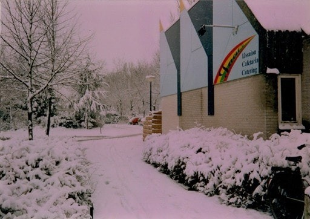
Nu
Jacco en Berthold zetten de zaak voort, en kleinkinderen Jason, Boyd en Aniek werken naast school mee. Iedereen begint met de vaat, daarna volgen slaatjes opmaken, uien schoonmaken en berenpoten maken, en pas dan de kassa. De nieuwste paradepaardjes: de Black Angus Burger en de Big Irish Beef Burger. De döner in de kapsalon komt van een Turkse leverancier, en de saté-, knoflook-, stroganoff- en jägersaus maken we zelf.
"Alles is met liefde bereid en dat proef je!"Sjaak, oprichter
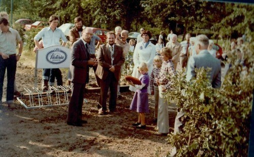
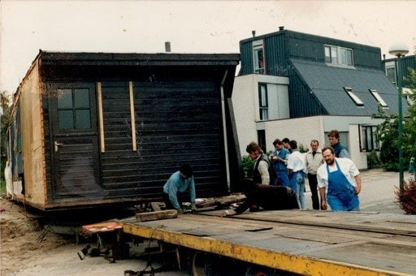
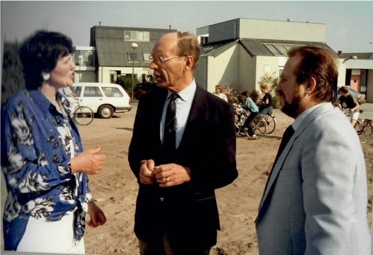
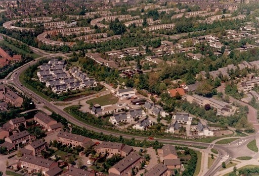
| Dag | Winkel | Afhalen | Bezorgen |
|---|---|---|---|
| Maandag | 11:00 - 21:30 | 11:30 - 21:30 | 17:00 - 20:30 |
| Dinsdag | gesloten | ||
| Woensdag | 11:00 - 21:30 | 11:30 - 21:30 | 17:00 - 20:30 |
| Donderdag | 11:00 - 21:30 | 11:30 - 21:30 | 17:00 - 20:30 |
| Vrijdag | 11:00 - 22:00 | 11:30 - 22:00 | 17:00 - 20:30 |
| Zaterdag | 11:00 - 22:00 | 11:30 - 22:00 | 17:00 - 20:30 |
| Zondag | 11:00 - 21:00 | 11:30 - 21:00 | 17:00 - 20:00 |
Afhalen en bezorgen gelden voor online bestellingen. Tijden zoals vermeld voor de weken 47 tot en met 49 (16 november tot en met 6 december 2026). Sinterklaasavond, zaterdag 5 december: gewoon open.
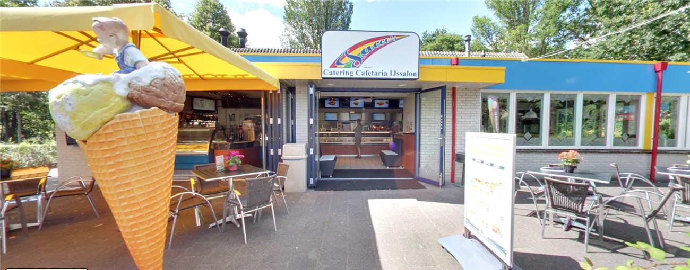
Jacco's Cafetaria
Lepelaar 7
3831 DD Leusden
Een vraag over catering, een ijskar of een bedrijfslunch? Laat het ons weten.